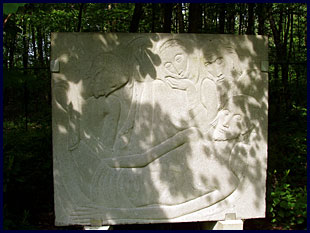

Het zwaartepunt van Herman De Cuypers publiek toegankelijke oeuvre is te situeren in het Scheldeland. Op het kerkhof van zijn geboortedorp Blaasveld ligt de kunstenaar begraven onder een beukenboom, met op zijn graf een verrijzenisbeeld in euvillesteen. Hij kapte deze Christusfiguur voor zijn moeder en wilde het graag behouden als eigen grafbeeld.
Blaasveld

Verschillende grafzerken zijn, evenals het Monument voor de Gesneuvelden (1928) voor de Sint-Amanduskerk, van zijn jeugdige hand. Voorbij de kerk, richting Willebroek-Centrum, prijkt voor het kasteel Bel Air de bronzen torso van zijn dorpsgenoot, vriend en verzetsheld Jan Neutjens (1932).
Als bewaard gebleven fragment van een mannelijk staand naaktfiguur illustreert dit goed de impressionistische boetseerkunst uit de eerste periode van de beeldhouwer. Op de begraafplaats van Willebroek realiseerde de kunstenaar in 1939, in euvillesteen, het Grafmonument voor pastoor Cleymans.
Puurs: grafmonument en kruisweg
Op funerair vlak is zijn belangrijkste werk het Grafmonument van de familie Bosserez te Puurs. Hij realiseerde dit werk in 1944 en voerde het uit in bontzandsteen.
In de loop van zijn carrière ontwierp Herman De Cuyper verschillende religieuze cycli in diverse materialen. In 1939 begon hij te kappen aan de veertien bas-reliëfs van de Kruisweg voor de Sint-Katharinakerk te Boom (Bosstraat). De eikenhouten panelen werden in de muren van het kerkschip ingewerkt en illustreren de visionaire en zelfs narratieve uitdrukkingskracht van zijn religieus animisme.
Een hoogtepunt van expressiviteit bereikte hij met de Openluchtkruisweg (1942–1944) voor de Carolusparochie te Ruisbroek (Puurs). Deze monumentale en in arduin gebeitelde bas-reliëfs staan als schilderijen op statieven opgesteld achter de Lourdesgrot in het Hof ter Zielbeek.

Kalfort: de Rozenkrans
Eenzelfde ingesteldheid spreekt uit de omvangrijkste religieuze cyclus, die de kunstenaar in 1951 en 1952 mocht beeldhouwen voor de kerktuin achter de O.-L.-Vrouw-Ten-Traan kerk te Kalfort (Puurs). De vijftien groepen van de Rozenkrans werden gebeiteld in blokken euvillesteen en geven gestalte aan de vijf Blijde, Droeve en Glorievolle Mysteries. De figuratie is tegelijkertijd natuurgetrouw en gestileerd.
Bornem: oorlogsmonument
Het Oorlogsmonument van Bornem (1934) is een typisch voorbeeld van een samengesteld monument met een dubbele functie: enerzijds de gesneuvelden eren (groep in arduin met profane pietà) en anderzijds een hulde aan het H. Hart (bronzen Verrezen Christus).
Mariekerke: Jan Hammenecker-monument

Vanuit Bornem is het slechts een boogscheut naar Mariekerke a/d Schelde. Daar werd in 1957 op de kerkberm vóór het O.-L.-Vrouwkerkje het Jan Hammenecker-monument ingehuldigd. Het monument werd in kunststeen uitgevoerd en stelt de priester en scheldedichter voor, staande naast Maria en het Jezuskind in een visserssloep. Op de achterzijde van het zeil werd in reliëf het door Hammenecker bezongen Kruisvisioen van de Heilige Lutgardis weergegeven.
In het kerkje zelf bevindt zich in de zuiderbeuk vóór de kooringang een eikenhouten Sint-Job. Dit beeld kwam tot stand in 1930 en was de eerste kerkelijke opdracht van de toen zesentwintigjarige kunstenaar.
Fotogalerij openluchtwerken


